株式会社智翔館 社内向け
会議DX 操作マニュアル
会議DXアプリのうち、メニュー画面・部門会議・要項QAの使い方をまとめた手引きです。画面の写真に付けた赤い番号（1）は、本文の同じ番号の説明に対応しています。
- 対象
- 全職員
- アプリ
- 智翔館アプリ › 会議DX（バージョン v0.16.1 時点）
- 作成
- 2026年10月
※ 写真に写っている会議名・人名・数値は、説明のために用意した架空の例です。AIの回答や議事録の文面も例で、実際の文面は会議や質問の内容によって変わります。
1-1左メニュー
使いたい画面の名前を押すと、その画面に切り替わります。いま開いている画面は水色で表示されます。
- 1
← メニューへ
智翔館アプリのメニュー（使うアプリを選ぶ画面）に戻ります。
- 2
ダッシュボード会議DXの最初の画面です。これからの部門会議・直近の議事録・実施中の要項がひと目で分かります（
1-2）。
- 3
部門会議会議の事前共有 → 録音 → 議事録 → 次回の事前共有、までを行います（
第2章）。
- 4
全体会議
全体会議の前後に使う画面です。
・数値報告：会議の前に、月次・講習期の数値を登録します。
・会議AI：会議の前に、事前報告・月次報告・講習の結果報告をAIと対話しながら作ります。
・全体会議振り返り：会議のあとに、感想・気づき・やると決めたことを残します。
- 5
AIに聞く › 要項QA講習会・イベントの申込方法・支払い・日程などを、確定した実施要項をもとにAIに聞けます（
第3章）。
- 6
ご意見・不具合の報告
アプリへの意見や、うまく動かないときの報告を送れます。
- 7
ログイン中の部門と名前・ログアウト
自分の部門と名前が正しいか確認できます。共用のパソコンでは、使い終わったらログアウトを押してください。一番下の「v0.16.1」はアプリのバージョンです。
1-2ダッシュボード
全部門の部門会議と、いま使う要項をまとめて表示します。会議の前に議題を確認したり、ほかの部門で決まったことを見たりするときに使います。
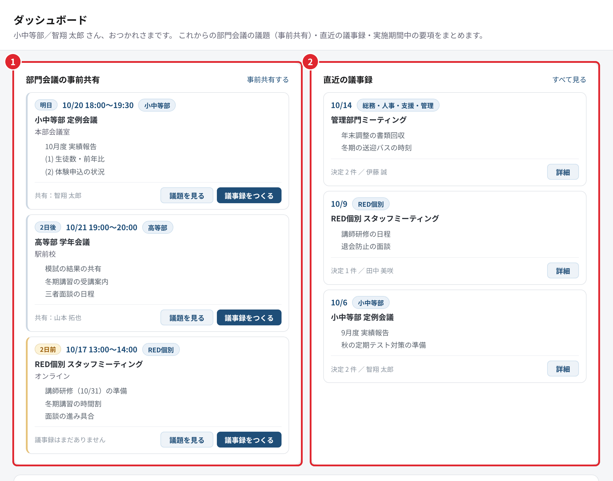
図2 ダッシュボード（上）
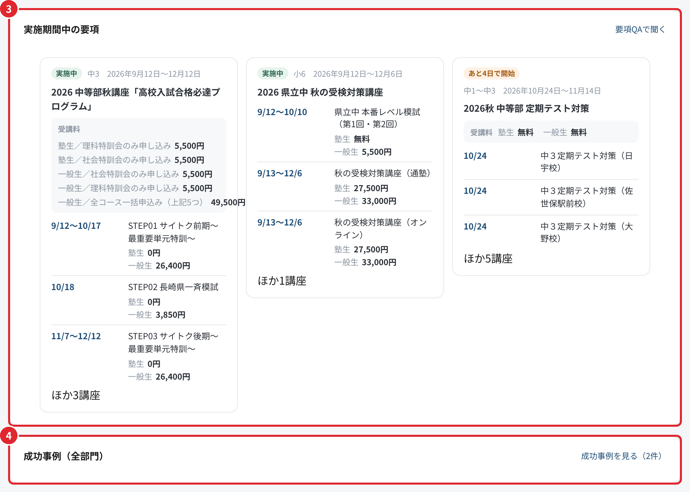
図3 ダッシュボード（下）
- 1
部門会議の事前共有
全部門の「これからの部門会議」です。開催日が近い順に並び、「今日」「3日後」のような印が付きます。議題を見るで議題・レジュメの全体を、議事録をつくるでその会議の議事録づくりを始められます（部門会議の画面に移ります）。議事録が保存された会議は、ここから外れて 2 に移ります。
- 2
直近の議事録
全部門の保存済みの議事録です。詳細で全文を読めます。右上の「すべて見る」で部門会議の画面に移ります。
- 3
実施期間中の要項
実施中の要項と、30日以内に始まる要項のカードです。受講料と講座ごとの日程が出ます。詳しく知りたいときは「要項QAで聞く」から質問できます。
- 4
成功事例（全部門）
会議AIの報告に書かれた成功事例が、全部門分たまっていきます。成功事例を見るで開きます。
1-3スマートフォンで使うとき
スマートフォンでは左メニューが隠れています。画面左上の ☰（1）を押すとメニューが開きます。メニューの外側（暗くなった部分）を押すと閉じます。
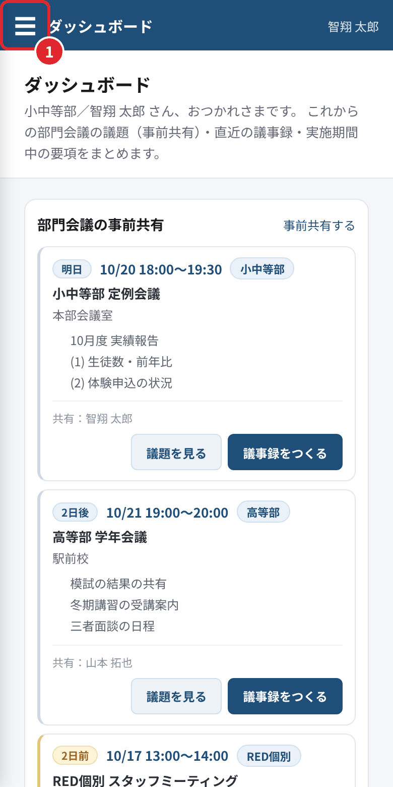
図4 スマートフォンの画面
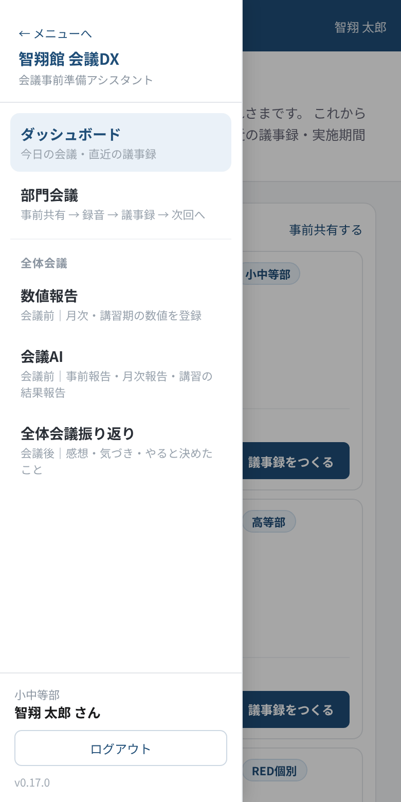
図5 ☰ を押してメニューを開いたところ
2-1部門会議の流れと画面
部門会議は、次の4つの手順をくり返します。手順4で作った下書きが、次の会議の手順1になります。
- 手順1事前共有会議名・日時・議題を入れて全部門に共有
- 手順2録音・取り込み会議の音声を文字にする
- 手順3議事録の確認・保存AIが作った議事録を直して保存
- 手順4次回の事前共有へ議事録から次の会議の下書きを作る
↻ 手順4のあとは、次の会議の手順1に戻ります
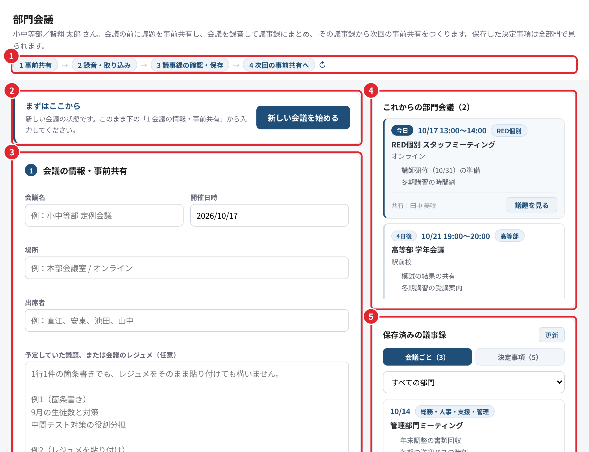
図6 部門会議の画面（開いたところ）
- 1
手順のボタン
押すと、画面の中のその手順の場所に移動します。
- 2
まずはここから／新しい会議を始めるいまの入力の状態が出ます。別の会議を始めるときは、ここの
新しい会議を始めるを押します（
2-2）。
- 3
手順1〜4の入力欄
上から順に、手順1・2・3・4と並んでいます。
- 4
これからの部門会議全部門の事前共有された会議です（
2-7）。
- 5
保存済みの議事録全部門の議事録と決定事項です（
2-7）。
2-2会議を始める前に
手順1のすぐ上の枠に「前の会議の内容が残っています」と出ているときは、前の会議の文字起こしや議事録が画面に残っています。そのまま書き足すと別の会議と混ざるので、先に新しい会議を始めるを押して、まっさらな状態にしてください。
ポイント
- 新しい会議を始めるで消えるのは、この画面の入力中の内容だけです。保存済みの議事録は消えません。
- 入力中の内容は、同じ端末・同じブラウザなら、画面を閉じたり再読み込みしたりしても残っています。
2-3手順1 会議の情報を入れて事前共有する
会議の前に行います。出席者は、ダッシュボードに載った議題を見ながら会議を進められます。
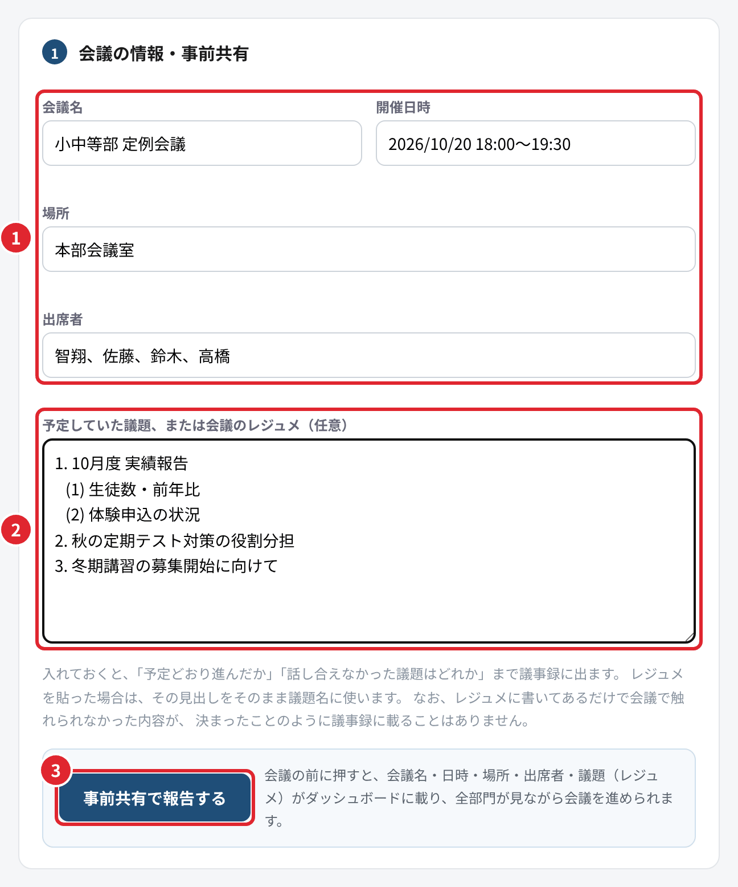
図7 手順1（入力したところ）
会議名・開催日時・場所・出席者を入れます（1）。開催日時は「2026/10/20 18:00〜19:30」のように、日付と時刻を入れてください。
予定していた議題を入れます（2）。1行に1件の箇条書きでも、会議のレジュメをそのまま貼り付けても構いません。
事前共有で報告するを押します（3）。
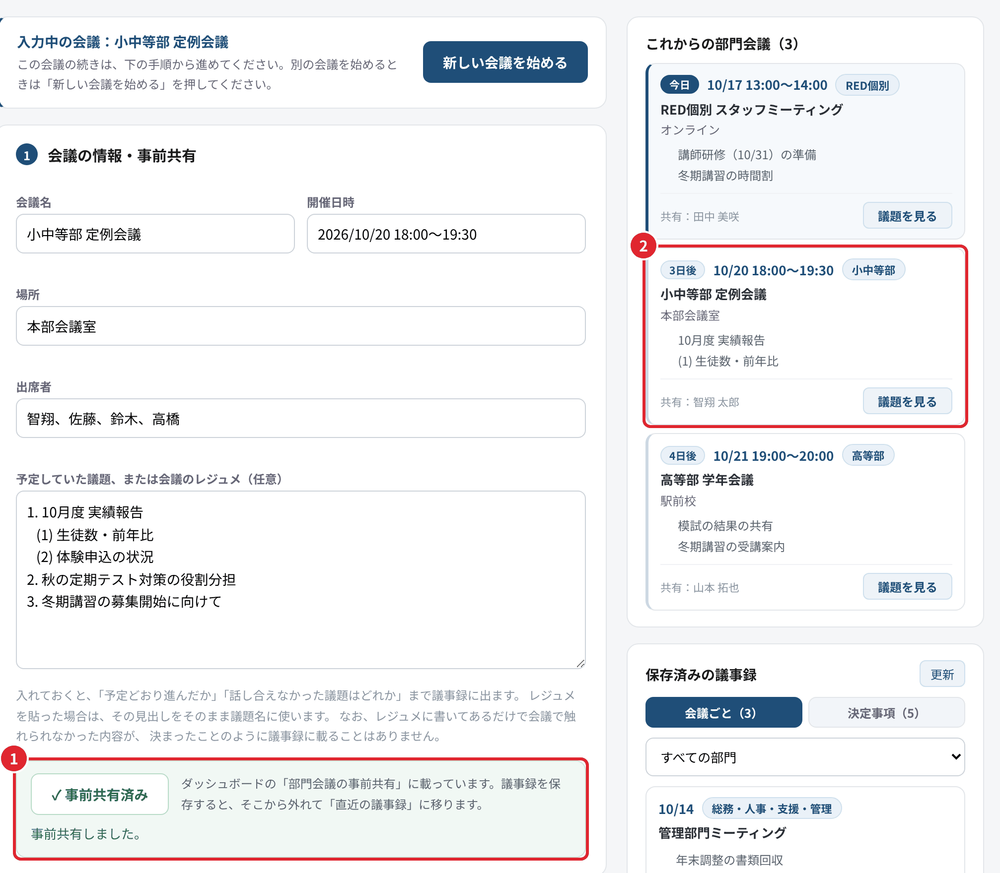
図8 事前共有したあと
ボタンが✓ 事前共有済みに変わり（1）、右の「これからの部門会議」とダッシュボードに会議が載ります（2）。
ポイント
- 会議名・開催日時・議題の3つが入っていないと事前共有できません。足りないときは、ボタンの下に何が足りないかが出ます。
- 事前共有のあとで内容を直したときは、ボタンが事前共有を更新するに変わります。押すとダッシュボードにも反映されます。
- 議題を入れておくと、議事録の議題に「予定どおり」「予定外」「未実施」が付き、話し合えなかった議題が分かります。
2-4手順2 会議の音声を取り込む
会議の音声を文字にします（文字起こし）。取り込み方は「その場で録音」「録音ファイルを添付」「文字起こしを貼り付け」の3つから選べます。
おすすめ：録音ファイルを添付
会議はスマートフォンの録音アプリ（iPhoneの「ボイスメモ」など）で録音し、会議のあとにその音声ファイルを添付する方法をおすすめします。
- 会議中にこの画面を開いておく必要がありません。
- 録音が手元に残るので、うまくいかなかったときもやり直せます。
録音ファイルを添付する
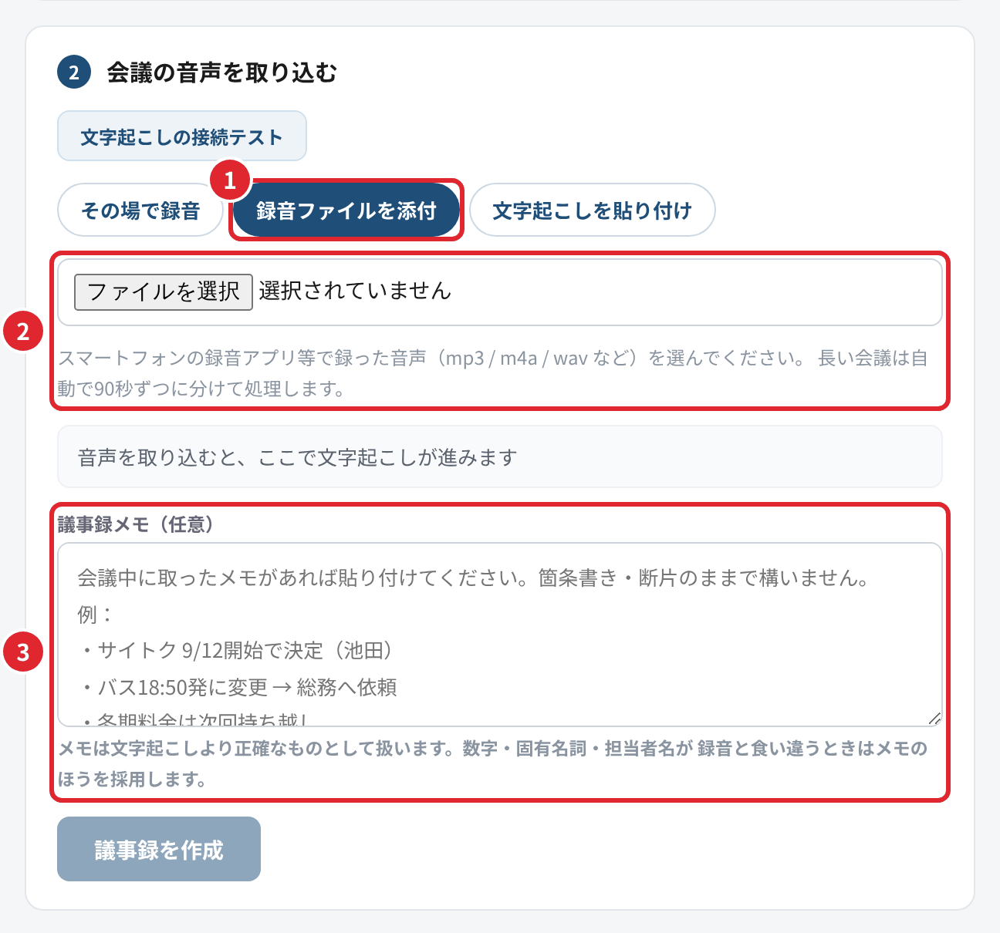
図9 手順2（録音ファイルを添付）
録音ファイルを添付を押します（1）。
ファイルを選択を押して、会議の音声ファイル（mp3・m4a・wav など）を選びます（2）。スマートフォンで録音した場合は、スマートフォンからそのまま選んでも、パソコンに送ってから選んでも構いません。
選ぶとすぐに文字起こしが始まります。終わるまで待ちます（下の「かかる時間の目安」）。
会議中に取ったメモがあれば、
議事録メモに貼り付けます（
3 任意。
下の説明）。
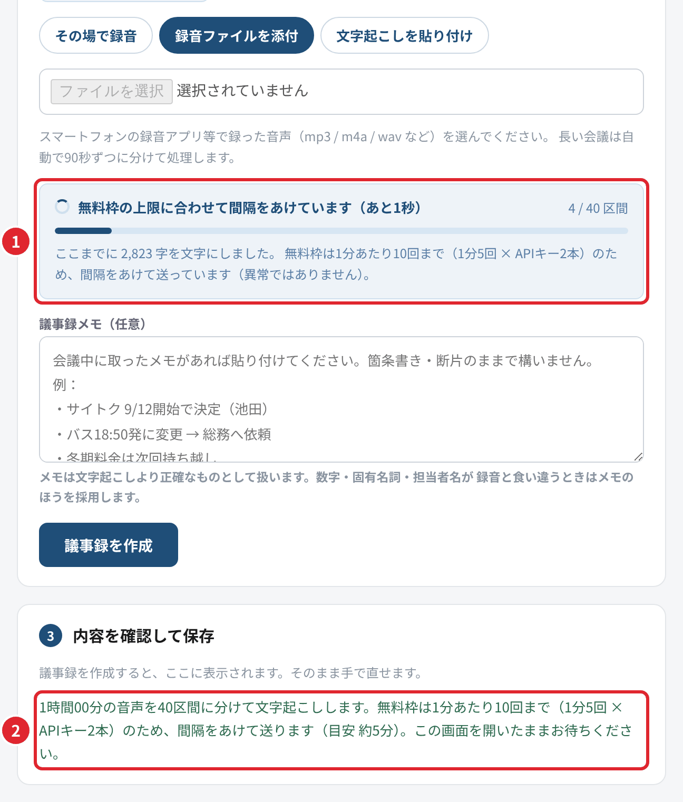
図10 文字起こしの途中
- 1
進み具合
音声を約1分半ずつの区間に分けて、順番に文字にしていきます。いま何をしているか（音声を読み込んでいます・アップロード中・解析中・間隔をあけています）と、「4 / 40 区間」のように、いくつ終わったかが出ます。
- 2
かかる時間の目安
ファイルを選んだ直後に「1時間00分の音声を40区間に分けて文字起こしします。…（目安 約5分）」のように出ます。
かかる時間の目安
ファイルを選んでから文字起こしが終わるまでの目安です。混み合っているときは、これより長くかかることがあります。長い音声は、始めに「音声を読み込んでいます」と出て、読み込みに数十秒かかります。
| 会議の長さ | 文字起こしが終わるまで |
|---|
| 30分 | 約3〜5分 |
| 1時間 | 約5〜10分 |
| 1時間30分 | 約8〜15分 |
待っているあいだは、別の作業をしていて大丈夫です
文字起こしは、このタブ（画面）を閉じなければ進み続けます。ほかのタブやほかのアプリで別の作業をしていて構いません。終わると「文字起こし完了（○字）」に変わります。
「無料枠の上限に合わせて間隔をあけています（あと○秒）」と出ても、異常ではありません。そのままお待ちください。
注意
- 終わる前にタブを閉じる・再読み込みする・パソコンをスリープさせると、文字起こしが止まります。
- スマートフォンで添付した場合は、ほかのアプリに切り替えると止まることがあります。終わるまで画面を開いたままにしてください。
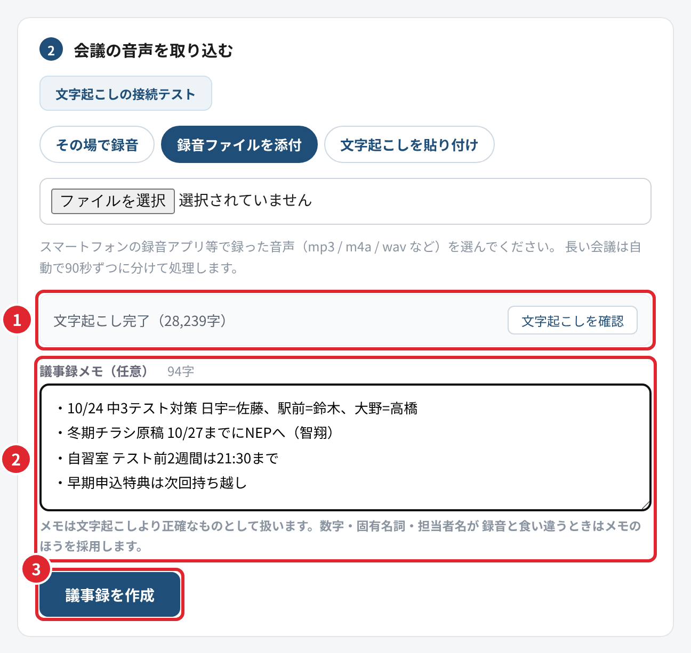
図11 文字起こしが終わったところ
- 1
文字起こし完了（○字）
文字起こしを確認で中身を見られます。ふだんは直す必要はありません（議事録は手順3で直せます）。
- 2
議事録メモ（任意）
会議中に取ったメモを、箇条書き・断片のまま貼り付けます。数字・固有名詞・担当者名が録音と食い違うときは、メモのほうが使われます。録音が無い会議は、メモだけでも議事録を作れます。
- 3
議事録を作成を押すと、AIが議事録を作り、手順3に表示します。
そのほかの取り込み方
- その場で録音：会議の場でこの画面を開き、● 録音を開始を押します。会議が終わったら■ 録音を終了を押します。録音しながら約1分半ごとに文字起こしが進むので、会議が終わるころには文字起こしもほぼ終わっています。初めて使うときは、ブラウザのマイクの使用を「許可」してください。録音中に画面を閉じると録音が止まります。
- 文字起こしを貼り付け：ほかのアプリで文字起こしした文章があるときに、そのまま貼り付けます。
2-5手順3 議事録を確認して保存する
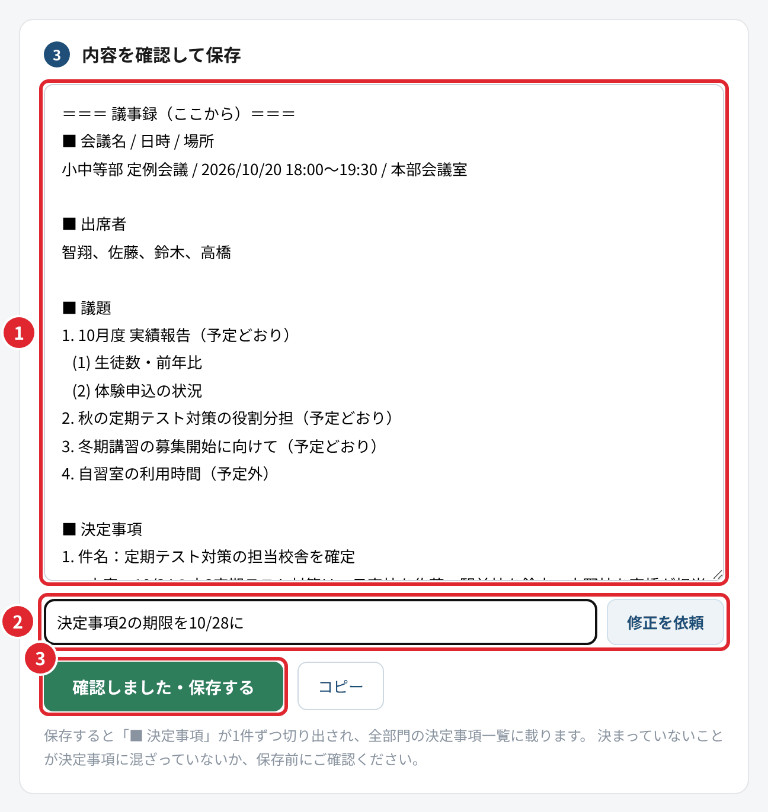
図12 手順3（AIが作った議事録）
AIが作った議事録を読みます（1）。この欄で、そのまま書き直せます。
議事録のあとには「会議の質チェック」が付きます。話し合えなかった議題、担当や期限が決まっていない決定事項など、次の会議で気をつけたい点が書かれています。
AIに直してほしいことがあれば、下の欄に書いて修正を依頼を押します（2）。例：「決定事項2の期限を10/28に」。⌘ / Ctrl ＋ Enter でも送れます。
内容を確認したら、確認しました・保存するを押します（3）。
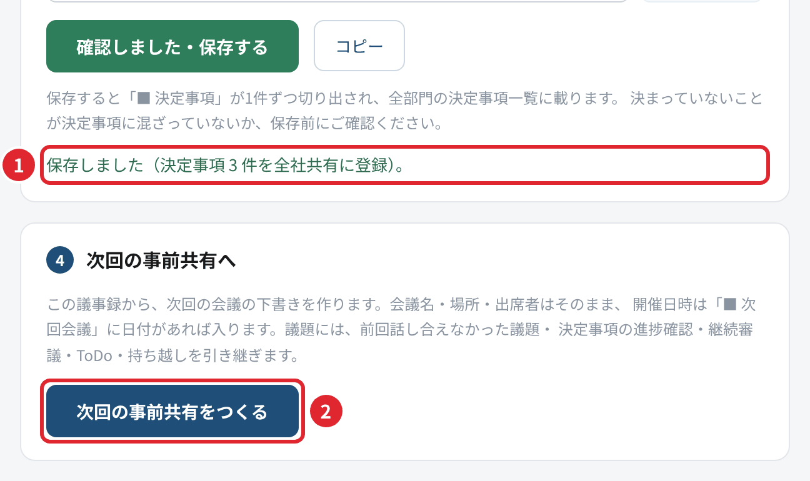
図13 保存したあと
「保存しました（決定事項 ○ 件を全社共有に登録）」と出れば完了です（1）。議事録の「■ 決定事項」が1件ずつ取り出され、全部門の決定事項の一覧に載ります。事前共有していた会議は、ダッシュボードの「部門会議の事前共有」から外れて「直近の議事録」に移ります。
保存の前に確認してください
- まだ決まっていないことが「決定事項」に入っていないか。決定事項は全部門に共有されます。
- 担当・期限が空欄のままの決定事項がないか。
コピーを押すと、議事録の全文をコピーできます。ほかの資料に貼るときに使います。
2-6手順4 次回の事前共有をつくる
保存した議事録から、次の会議の下書きを作ります。図13の次回の事前共有をつくる（2）を押し、確認が出たら「OK」を押します。
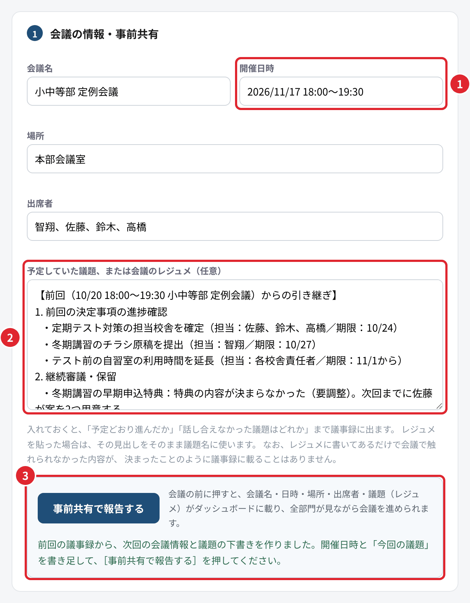
図14 次回の下書きが手順1に入ったところ
- 1
開催日時
議事録の「■ 次回会議」に書かれた日時が入ります。会議名・場所・出席者は前回と同じものが入ります。
- 2
議題
前回話し合えなかった議題、決定事項の進み具合の確認、継続審議・保留、終わっていないToDo、持ち越しが入ります。今回話したい議題を書き足してください。
- 3
内容を確かめたら
事前共有で報告するを押します。ここからまた手順1（
2-3）の流れになります。
ポイント
前に保存した議事録からも次回の下書きを作れます。右の「保存済みの議事録」の詳細から次回の事前共有をつくるを押してください（2-7）。
2-7右側の一覧を使う
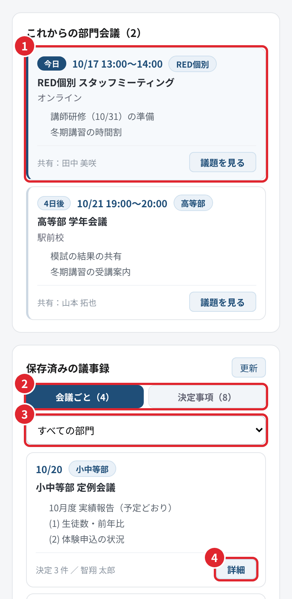
図15 画面右側の一覧
- 1
これからの部門会議
全部門の事前共有された会議です。議題を見るで議題・レジュメ全体を読めます。
- 2
会議ごと／決定事項
「会議ごと」は保存済みの議事録の一覧、「決定事項」は全部門で決まったことを1件ずつ（担当・期限つきで）並べた一覧です。
- 3
部門の絞り込み
部門を選ぶと、その部門の議事録・決定事項だけを表示します。
- 4
詳細
議事録の全文と会議の質チェックを開きます（図16）。
保存済みの議事録を直す・次回につなげる
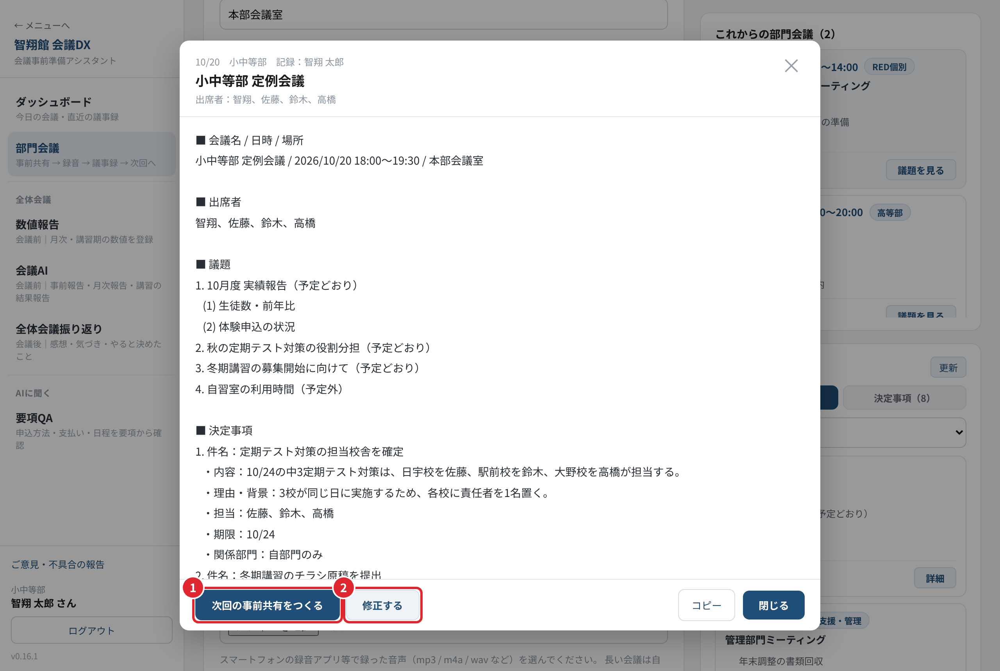
図16 議事録の詳細
- 1
次回の事前共有をつくるこの議事録から次回の下書きを作り、手順1に入れます（
2-6）。
- 2
修正する
議事録を手順3の欄に読み込みます。直して確認しました・保存するを押すと、元の議事録が上書きされます。
別の端末で続きをする
事前共有はパソコンで行い、録音ファイルの添付はスマートフォンで行う、というように端末が変わるときは、続きの端末で「これからの部門会議」の議題を見るを押し、この会議の議事録をつくる（1）を押します。会議の情報が手順1に読み込まれるので、手順2から続けられます。保存すると、事前共有した会議と議事録が結び付きます。ダッシュボードの議事録をつくるからも同じことができます。
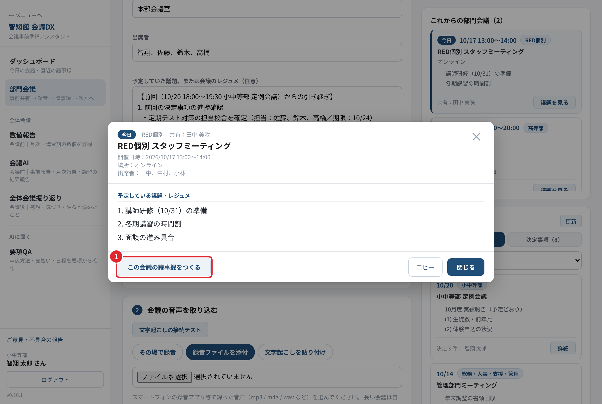
図17 事前共有の詳細（議題を見る）
2-8困ったとき
| こんなとき | どうする |
|---|
| 「○○を入れてから事前共有してください」と出る | 会議名・開催日時・議題の3つを入れてから、もう一度押してください。 |
| 「無料枠の上限に合わせて間隔をあけています」と出たまま進みが遅い | 異常ではありません。区間ごとに間隔をあけて送っています。タブを閉じずにお待ちください。 |
| 「○区間は文字にできませんでした」と黄色で出る | その部分は議事録に入りません。足りないところを議事録メモに書き足してから議事録を作成を押してください。 |
| 「文字起こしできませんでした」と赤で出る | 表示された理由を確認し、時間をおいてもう一度試してください。「1日あたりの利用枠を使い切りました」と出たときは、日付が変わると使えるようになります。急ぐときは、ほかのアプリで文字起こしした文章を「文字起こしを貼り付け」から入れてください。 |
| 「この音声ファイルを読み込めませんでした」と出る | mp3・m4a・wav などの音声ファイルを選んでください。 |
| 「マイクを使えませんでした」と出る | ブラウザでマイクの使用を許可してください。うまくいかないときは、録音アプリで録音して「録音ファイルを添付」を使ってください。 |
| 前の会議の内容が残っている | 新しい会議を始めるを押してから入力してください（2-2）。 |
| 「保存に失敗しました」と出る | 議事録は画面に残っています。時間をおいてもう一度確認しました・保存するを押してください。念のためコピーで控えを取っておくと安心です。 |
解決しないときは、左メニューの「ご意見・不具合の報告」から、出ていた表示と一緒に送ってください。
3-1画面の見方
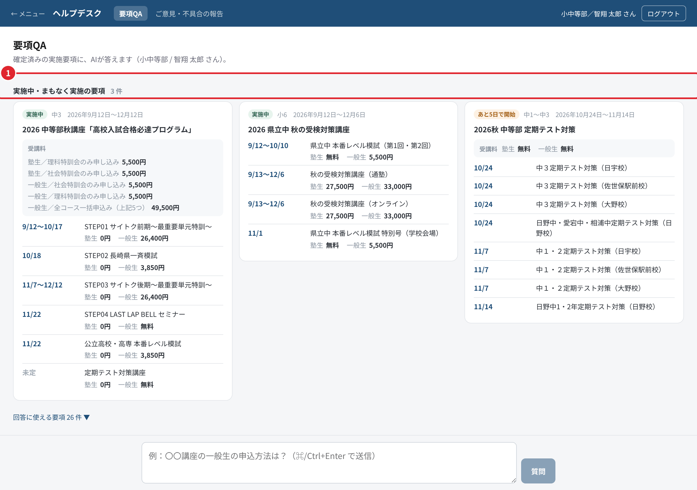
図18 要項QA（画面の上側）
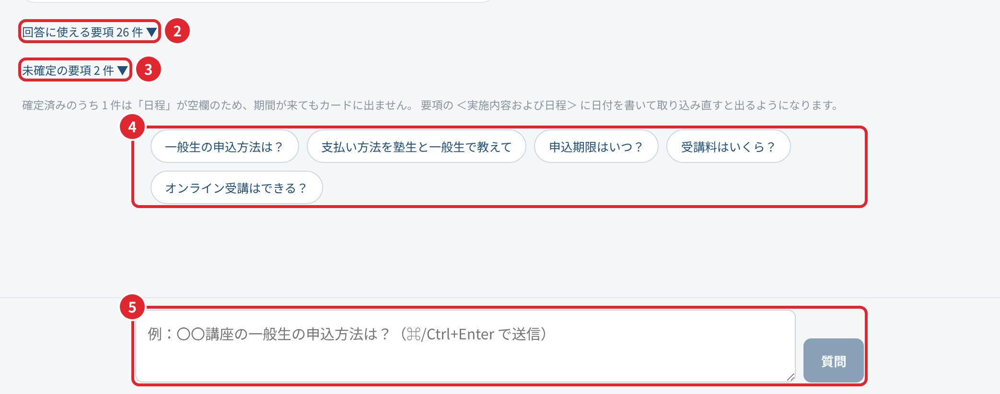
図19 要項QA（画面の下側）
- 1
実施中・まもなく実施の要項実施中の要項と、30日以内に始まる要項がカードで並びます（
3-2）。
- 2
回答に使える要項
押すと、AIが回答に使う確定済みの要項の一覧が開きます。終わった講習の要項も含まれるので、過去の要項についても質問できます。
- 3
未確定の要項まだ内容が確定していない要項です。AIはこれらには答えません（
3-4）。
- 4
質問の例
押すと、その文のまま質問できます。最初の質問の前だけ表示されます。
- 5
質問の入力欄聞きたいことを書いて
質問を押します（
3-3）。
3-2要項カードの見方
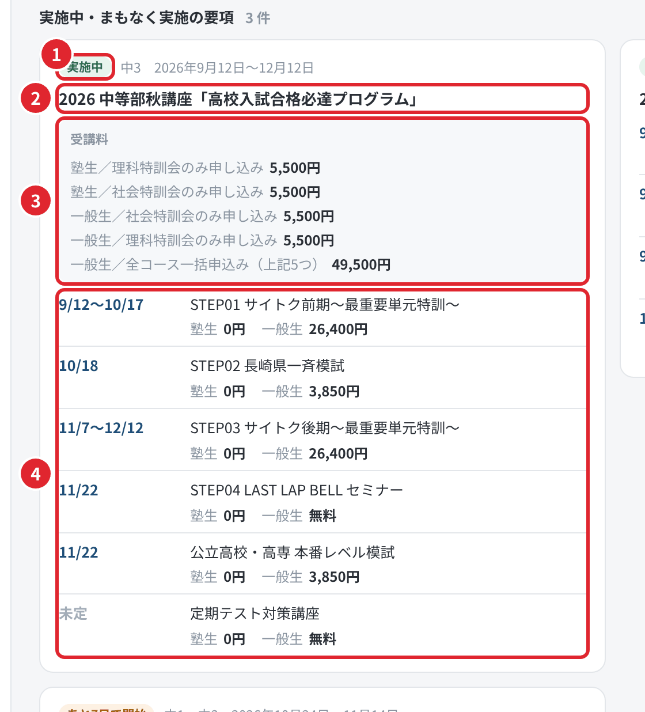
図20 要項カード
- 1
状態・対象・期間
「実施中」「あと○日で開始」「本日開始」の印と、対象学年・実施期間です。
- 2
要項名
- 3
受講料（要項全体）
要項全体に共通する受講料です。
- 4
講座ごとの日程と受講料
講座ごとに、日程と塾生・一般生それぞれの受講料が並びます。
カードには、よく聞かれる「どの講座が・いつから・いくらで」だけを載せています。申込方法・会場・持ち物などは、下の入力欄から質問してください。ダッシュボードのカードでは講座が3件までしか出ず、残りは「ほか○講座」と表示されます。
3-3質問する
画面下の入力欄に、聞きたいことを書きます（例：「秋の定期テスト対策の、一般生の申込方法と期限は？」）。
質問を押します。⌘ / Ctrl ＋ Enter でも送れます。
回答が表示されます。続けて質問すると、前のやり取りをふまえて答えます。
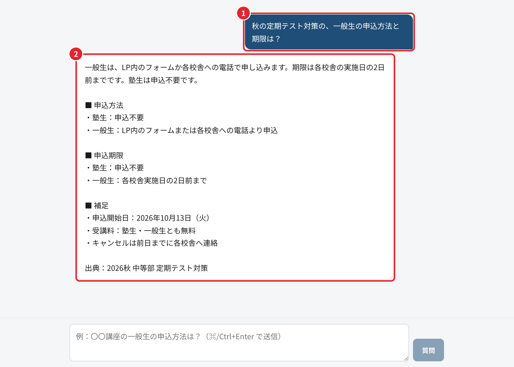
図21 質問と回答の例
- 1
質問
- 2
回答
はじめに結論を1〜3行で答え、そのあとに詳しい条件を書きます。塾生と一般生で扱いが違う項目は、両方を分けて書きます。最後に、どの要項をもとにしたか（出典）が付きます。
3-4未確定の要項について
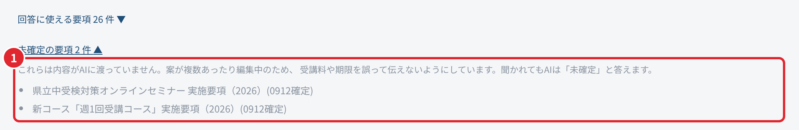
図22 未確定の要項を開いたところ
案が複数あったり編集中だったりする要項は、受講料や期限を誤って伝えないよう、内容をAIに渡していません（1）。これらについて聞くと、AIは「まだ確定していないため回答できません」と答えます。要項の担当者に確認してください。
3-5上手な聞き方と注意
上手な聞き方
- 講座名・学年・校舎を入れる：「申込期限は？」より「中3の秋の定期テスト対策（大野校）の申込期限は？」のほうが、確実に答えられます。
- 塾生か一般生かを入れる：申込の要否や支払い方法は、塾生と一般生で違うことがあります。
- 1回に1つのことを聞く：答えが長くなりすぎず、読み違いが減ります。
注意
保護者に伝える前に
- AIが答えるのは、確定済みの要項に書いてあることだけです。要項に書かれていないことは「その要項には記載がありません」と答え、推測では答えません。
- 金額・日付・期限を保護者に伝えるときは、念のため要項の本文でも確認してください。
- ほかの画面に移ったり、ページを再読み込みしたりすると、それまでのやり取りは消えます。
- 探している要項が「回答に使える要項」に無い、内容が古いと感じたときは、要項の担当者に連絡してください。